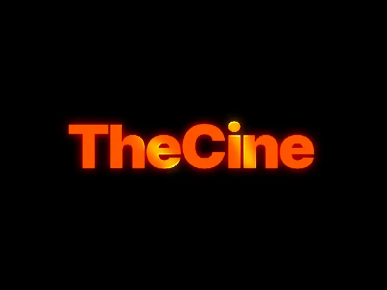

KURGUNU YAVAŞLATAN HER ŞEY, TEK PANELDE
PREMIERE’DEN
ÇIKMADAN
KURGULA.
Altyazı. Kesim. Zoom. Yazı efekti. SFX.
Akış bozulmadan, fikir soğumadan.
00:12
Şimdi asıl hikâyeye geçiyoruz.
00:15
Boşlukları bul, ritmi koru.
EDİTİ BÖLEN ARAÇLAR
ARTIK
TEK YERDE.
Yerel AI seçeneği: ses dosyan bilgisayarından çıkmaz.
RİTMİ SEN KUR, TEKRARI SUFLO YAPSIN
KESİM VE ZOOM.
İKİSİ DE AKILLI.
01 · MAGIC CUTBoşlukları bulur.
Önizlersin, onaylarsın, timeline temizlenir.
100%112%
02 · AUTO ZOOMVurguyu yaklaştırır.Yoğunluk, süre ve aralık kontrolü sende kalır.
TEXT
TİKTOK’TAN PREMIUM REKLAMA
YAZI DEĞİL.
SAHNENİN KENDİSİ.
 PREMIUM TEXTSinematik başlık
PREMIUM TEXTSinematik başlık SMOOTH UPTemiz giriş
SMOOTH UPTemiz giriş GOLD TEXTLüks görünüm
GOLD TEXTLüks görünüm CRACKEDYüksek etki
CRACKEDYüksek etki
STATIC SHINEParlak vurgu262MOGRT · yazı · grafik · geçişPRO
SESSİZ EDİT, YARIM EDİTTİR
HER HAREKETİN
BİR SESİ VAR.
769
SFXAra · ön dinle · playhead’e ekle
⌕whoosh, impact, click...⌘K
SUFLO Smooth Whoosh 04＋ EKLE
Yeni: Malice iş birliğiyle hazırlanan 9 özel SUFLO Smooth Whoosh.
KEYFRAME ÇİZMEK YERİNE
HAREKETİ
TEK TIKLA VER.
12yerleşik hareketPremiere timeline’ına gerçek keyframe yazar.
TEK DOSYADA DEV HAREKET SETİ
PREMIERE’E
YENİ HAREKET DİLİ.
1×paketi içe aktar
→∞Premiere’de kalıcı kullan
Suflo paketi indirir, dosyayı gösterir ve doğru Premiere import adımlarını açar.
BİR KEZ KUR, GÜNCEL KAL
YENİ İÇERİK GELİR.
PAKETİN BÜYÜR.
↻Pro içerik bulutu: lisansına bağlı, güncel ve tek panelden yönetilir.
SUFLO SUFLO SUFLO
VİRALDEN BELGESELE, TEK TIKLA
ALTYAZININ DA
BİR KARAKTERİ VAR.
ABONELİK YOK. KREDİ YOK.
DAHA AZ TIK.
DAHA ÇOK KURGU.
749TLtek sefer
262 MOGRT+769 SFX+278 PRESET
✓ 3 bilgisayarda kullanım
✓ 14 gün iade güvencesi
✓ Pro içerik bulutu + güncellemeler
✓ Premiere 2020+ · Windows / macOS
HEMEN İNCELEsuflo.app/pro→
Ücretsiz Suflo sürümü devam eder. Pro; hızlandırıcı araçları, presetleri ve içerik kütüphanesini açar.